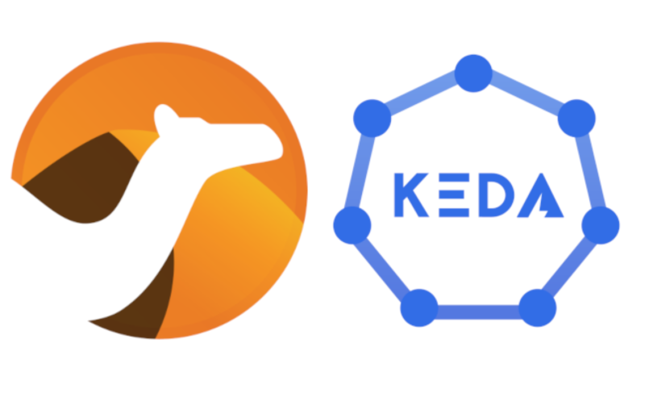

NOTE: this post has first appeared in the author’s blog.
KEDA (Kubernetes Event Driven Autoscalers) is a fantastic project (currently CNCF incubating) that provides Kubernetes-based autoscalers to help applications to scale out according to the number of incoming events when they are listening to several kinds of event sources. In Camel K we’ve long supported Knative for providing a similar functionality for integrations that are triggered by HTTP calls, so supporting KEDA was something planned since long time, because it enables full autoscaling from a wider collection of sources. The KEDA integration has now been merged and it will be available in Camel K 1.8.0. This post highlights some details of the solution. If you want to see it in action, you can just jump to the end to see the demo recording.
Why KEDA and Camel K?
Users may want to set up integrations that automatically scale, e.g. depending on the number of messages left in a Kafka topic (for their consumer group). The integration code may do e.g. transformations, aggregations and send data do a destination and it would be great if the number of instances deployed to a Kubernetes cluster could increase when there’s work left behind, or they can scale to zero when there’s no more data in the topic. This is what KEDA does by itself with scalers (Kafka is one of the many scalers available in KEDA). What you have now is that KEDA is now automatically configured by Camel K when you run integrations, so you get the autoscaling features out of the box (you just need to turn a flag on).
How does it work?
In Camel K 1.8.0 a new KEDA trait has been introduced. The trait allows to manually tweak the KEDA configuration to make sure that some ScaledObjects (KEDA concept) are generated as part of the Integration reconciliation, but this is mostly an internal detail. The interesting part about the KEDA trait is that it can recognize special KEDA markers in Kamelets and automatically create a KEDA valid configuration when those Kamelets are used as sources. So users can just use Kamelets to create bindings as usual and, if they enable a KEDA flag via an annotation, they get an event driven autoscaler automatically configured.
The Kamelet catalog embedded in next release (v0.7.0) contains two Kamelets enhanced with KEDA metadata: aws-sqs-source and kafka-source. These are just two examples of the many Kamelets that can be augmented in the future. The metadata configuration system is open and Kamelets can be marked at any time to work with KEDA: this means that you don’t need to wait for a new Camel K release to enable KEDA on a different source and, more importantly, that you can mark your own Kamelets with KEDA metadata to enable autoscaling from your internal organization components.
The Kamelet developer guide contains a new section on how to mark a Kamelet with KEDA metadata, but essentially markers are used to map Kamelet properties into KEDA configuration options, so that when you provide a Kamelet configuration, the corresponding KEDA options can be generated from it (all the work is done under the cover by the Camel K operator).
A binding example
Before looking at the demo, here’s an example of autoscaling binding that you can create with the latest Camel K:
apiVersion: camel.apache.org/v1alpha1
kind: KameletBinding
metadata:
name: kafka-to-sink
annotations:
trait.camel.apache.org/keda.enabled: "true"
spec:
source:
ref:
apiVersion: camel.apache.org/v1alpha1
kind: Kamelet
name: kafka-source
properties:
bootstrapServers: "<-- bootstrap servers -->"
consumerGroup: my-group
topic: "<-- the topic -->"
user: "<-- user -->"
password: "<-- pwd -->"
sink:
# ...
You can notice that the only difference from a standard binding is the presence of the trait.camel.apache.org/keda.enabled=true annotation that enables the KEDA trait in Camel K. The information about how to map Kamelet properties into KEDA options is encoded in the Kamelet definition.
Demo
Time for the demonstration. You’ll see both the aws-sqs-source and the kafka-source in action with Camel K and KEDA.
The code for the demo is in the nicolaferraro/camel-k-keda-demo repository on GitHub.
You can watch the demo on YouTube!
Next steps
There are many other Kamelets to enhance in apache/camel-kamelets and things to improve in Camel K that are listed in the area/KEDA section of the issue tracker.
Contributions are always welcome!